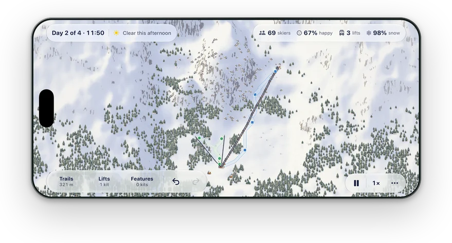

Un gioco gestionale per iPhone e iPad
Una piccola montagna. Mille possibilità.
Disegna piste e impianti, poi guarda i piccoli sciatori fare la coda, curvare e inseguire la neve fresca. Un solo prezzo. Senza pubblicità. Senza acquisti in-app.
Un solo prezzo, senza pubblicità, senza acquisti in-app, senza account. Funziona completamente offline. iOS 18 o successivo.


Come si gioca
Disegna le piste. Guardali sciare.
Un gesto, e la montagna si anima. Tu tracci le discese e gli impianti; gli sciatori, il meteo e le code rispondono da soli.
-
Uno
Disegnare le piste
Trascina un dito in discesa, direttamente sul terreno. È il terreno a decidere la pendenza: di traverso su un muro la discesa si addolcisce, dritto giù diventa una nera.
-
Due
Far girare gli impianti
Le piste portano gli sciatori a valle, gli impianti li riportano su, ed è lì che nascono le code. Comincia con uno skilift, porta le seggiovie lungo le creste e manda una cabinovia in cima.
-
Tre
Guardali sciare
Principianti, famiglie, passeggiatori, esperti e avventurosi scelgono ognuno le discese che fanno per loro, fanno la coda, inseguono la neve fresca e tornano a casa quando sono stanchi. Quando qualcosa si inceppa, il gioco ti dice dove.
Decide il terreno
Ogni discesa mostra la sua difficoltà.
Le discese sono segnate con la forma oltre che con il colore, così restano leggibili a colpo d'occhio anche senza percezione dei colori. Le più ripide portano il doppio rombo.
- Cerchio verdePrincipiante
- Quadrato bluIntermedio
- Rombo neroDifficile
Snowline usa la segnaletica nordamericana a cerchio, quadrato e rombo, non le piste blu, rosse e nere delle stazioni italiane.
Nel gioco
La montagna da vicino.

Disegnare una stazione. 
Il collo di bottiglia sono gli impianti. 
Piccoli edifici, grandi effetti. 
Il meteo cambia tutto.
Il Viaggio
Cinque montagne, ognuna con il suo carattere.
Ogni montagna è un breve scenario di quattro-sei giornate, con tre medaglie.
Queste immagini sono le illustrazioni di capitolo che compaiono alla scelta della montagna. Non sono immagini di gioco; quelle sono più in alto.
La modalità Zen ne aggiunge altre nove, senza medaglie e senza fallimenti: Cinder Cone, Rimrock Mesa, Frost Lake, Iron Fjord, Twin Saddle, Serac Glacier, Nordic Vale, Cirque Bowl e Pipe Hollow. Ognuna pone un problema diverso.
-

Capitolo 1 · Le basi
Alpine Dawn
Pendii aperti sopra un piccolo paese. Le tue prime piste, il tuo primo impianto e i tuoi primi sciatori.
-
Capitolo 2 · Le code
Pine Valley
Una valle boscosa dove gli impianti convergono su una stazione di partenza affollata. Tieni le code in movimento.
-

Capitolo 3 · La neve
Glacier Basin
Una conca ghiacciata sopra un catino soleggiato. Fai durare la neve.
-

Capitolo 4 · Il vento
High Ridge
Una cresta esposta sopra discese riparate. Metti in conto i giorni in cui il vento ferma gli impianti alti.
-

Capitolo 5 · Tutto insieme
Three Peaks
Tre cime condividono un paese. Code, neve e vento, tutto insieme.
La montagna è l'interfaccia
Un piccolo mondo. Decisioni vere.
Niente tabelle né menu da gestire. Tocca un impianto o una discesa per vedere perché si satura e cosa servirebbe.
Sciatori che decidono da soli
Principianti, famiglie ed esperti scelgono il proprio percorso in base a capacità, attesa e condizioni.
Il collo di bottiglia sono gli impianti
Le code nascono da un'affluenza reale e da una portata reale. Potenzia una seggiovia satura e guarda dove si sposta l'affluenza.
Previsioni su cui contare
Le previsioni annunciano tempesta, vento e caldo prima che arrivino. La neve fresca attira gli esperti; il vento può fermare gli impianti esposti.
La neve finisce
La neve si assottiglia sui pendii bassi e soleggiati, mentre le conche alte tengono il loro manto. Dove costruisci decide quanto regge la giornata.
Una decisione ogni mattina
Prima che aprano gli impianti scegli la priorità della giornata. Al resto pensano le squadre.
Annulla, pausa, accelerato
Annulla e ripristina ogni modifica, metti in pausa quando vuoi e accelera quando la stazione gira da sola.
Sei strutture
Sei modi di dare forma alla giornata.
Ognuna cambia dove vanno gli sciatori, quanto dura la neve, o quanto la montagna regge in sicurezza.
- SnowparkAttira gli sciatori freestyle sulle discese attorno.
- Impianto ad alta portataPorta su più sciatori. Occhio alle discese che alimenta.
- RifugioUn posto dove gli sciatori stanchi si riposano e si scaldano.
- Centro battipistaTiene in forma le discese vicine da un giorno all'altro.
- Posto di soccorsoAiuta a tenere aperto il suo angolo di montagna quando il tempo gira.
- Cannoni da neveProteggono la neve a portata nelle giornate fredde.
Tre modi di giocare
Prendere medaglie, costruire con calma o provarci con la cima del giorno.
-
Si comincia qui
Viaggio
Cinque montagne, tre medaglie ciascuna. Alpine Dawn insegna le basi, Pine Valley mette alla prova le tue code, Glacier Basin la tua neve, High Ridge il vento, e Three Peaks tutto insieme. Guarda le montagne
-
Zen
Costruire con i propri tempi, senza poter perdere.
-
Cima del giorno
Una montagna nuova ogni giorno, la stessa per tutti.
Comodo da giocare
Pensato per tutti, in montagna.
Accessibilità e comfort
- La difficoltà mai solo con il colore: cerchio, quadrato, rombo
- Rispetta «Riduci movimento»
- Aree di tocco ampie, almeno 44 punti
- Velocità di gioco regolabile, pausa quando vuoi
- Funziona completamente offline
- iPhone in orizzontale e iPad
Un solo prezzo. Nient'altro.
Snowline è un gioco premium. Paghi una volta, e basta.
- Senza pubblicità
- Senza acquisti in-app
- Senza account e senza tracciamento
- Le tue stazioni restano sul dispositivo
Leggi l'informativa sulla privacy (English)
La tua montagna ti aspetta.
Snowline è un gioco gestionale di stazioni sciistiche per iPhone e iPad. Un solo prezzo. Senza pubblicità. Senza acquisti in-app.